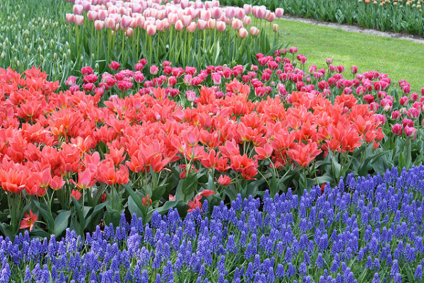

Квіткові
Квіткові - таксон вищих рослин, які формують квітки. Ця група налічує 64 порядки, понад 400 родин, понад 13 000 родів і, ймовірно, не менше 250 000 видів сучасних рослин. За числом видів квіткові рослини значно перевершують решту груп вищих рослин, узятих разом. Вони складають одну з груп насінних рослин. Найважливіша особливість квіткових рослин — наявність спеціалізованого органу, квітки, що бере на себе функції розмноження і залучення агентів запилення. Квіткові рослини формують свої насінні зачатки в порожнині зав'язі, яка утворена зрощенням колись відкритого плодолистка. Стінки зав'язі після запліднення розростаються і видозмінюються, даючи структуру під назвою плід. У решті груп насінних рослин насіннєвий зачаток не прихований від запилення, а насіння не поміщене в дійсний плід, але іноді насіння можуть покривати м'ясисті структури, наприклад, у представників роду тис.
Будова
Квітка складається із стеблової частини (квітконіжка і квітколоже), листкової частини (чашолистки, пелюстки) та генеративної частини (тичинки, маточка або маточки). Квітка є апікальним (верхівковим) органом, але при цьому вона може розташовуватися як на верхівці головного пагона, так і бічного. Вона прикріплюється до стебла за допомогою квітконіжки. Якщо квітконіжка сильно вкорочена або відсутня, квітка називається сидячою (подорожник, вербена, конюшина). На квітконіжці розташовуються також два (у дводольних) і один (в однодольних) маленьких передлистки — приквітки, які часто можуть бути відсутні. Верхня розширена частина квітконіжки, на якій розташовуються всі органи квітки, називається квітколожем. Квітколоже може мати різні розміри і форму — плоску (півонія), опуклу (суниця, малина), увігнуту (мигдаль), подовжену (магнолія). У деяких рослин в результаті зрощення квітколожа, нижніх частин покрову та андроцею утворюється особлива структура — гіпантій. Форма гіпантію може бути різноманітною і іноді брати участь в утворенні плоду (цінарродій — плід шипшини, яблуко). Гіпантій характерний для представників родин розових, аґрусових, ломикаменевих, бобових.
Історія
Ботанічний термін «Angiospermae» (дослівно «покритонасінні») запропонував Пауль Герман (нім. Paul Hermann) в 1690 році, термін був складений з грецьких слів αγγειον (вмістище) і σπερμα (насіння). Так Герман називав один з найголовніших відділів рослинного царства, якій включав рослини, насіння яких оточене капсулами. Gymnospermae за Германом були квітковими рослинами, чий єдиний цілісний плід вважався насінням з відсутніми покривами. Сам термін і його антонім були підхоплені Карлом Ліннеєм, який використовував їх у схожому, але більш обмеженому сенсі — для назв рядів свого класу Двосильних (Didynamia). У своєму сучасному значенні ці терміни почали використовуватися після того, як Роберт Браун в 1827 році встановив існування істинно голих насіннєвих зачатків у Cycadeae і Coniferae, назвавши їх Gymnospermae. З того часу термін Angiospermae став використовуватися різними авторами, іноді з різними варіаціями, для позначення однієї з підгруп в межах дводольних рослин (розділення «явношлюбних» рослин на безсім'ядольні, одно(сім'я)дольні і дво(сім'я)дольні набуло поширення дещо раніше).
Анатомія
Характерною ознакою покритонасінних є квітка, яка демонструє чудову різноманітність форм і забезпечує надійні зовнішні ознаки для розрізнення видів покритонасінних. Функція квітки — забезпечення запліднення яйцеклітини і розвитку плоду, який містить насіння. Іноді, як у фіалки, квітка виникає окремо в пазусі звичайного листка. Проте, звичайно, частина рослини, що несе квітку, знаходиться на кінці паростка, видається над вегетативною частиною (частиною, яка несе листя) і формує детально розроблену систему гілок, відому як суцвіття.